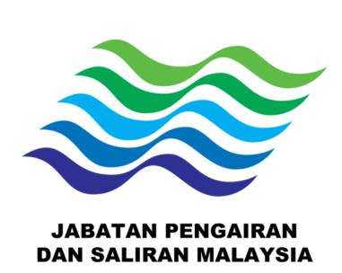
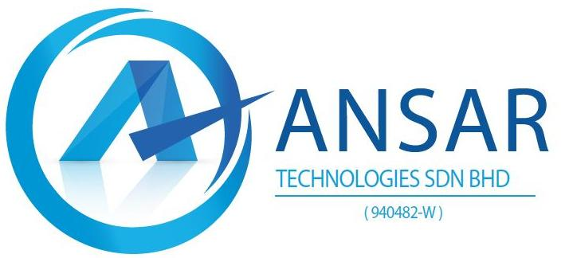

MESYUARAT KICK-OFFPROJECT / PRABN / 2026
JABATAN PENGAIRAN DAN SALIRAN MALAYSIAKICK-OFF PROJEK
KERJA-KERJA PENGUBAHSUAIAN RUANG PEJABAT TRANSIT PUSAT RAMALAN DAN AMARAN BANJIR NEGARA (PRABN) SERTA KERJA-KERJA LAIN YANG BERKAITAN DI IBU PEJABAT JPS MALAYSIA, CYBERJAYA, SELANGOR
Jumlah KontrakRM 891,000Harga kontrak rasmi
Tempoh5 Bulan107 hari kerja
Milik Tapak13 Nov 2026Mula pelaksanaan
Serahan12 Apr 2027Hand over projek
PEMILIK · JABATAN PENGAIRAN DAN SALIRAN MALAYSIA
KONTRAKTOR · ANSAR TECHNOLOGIES SDN BHD
RENOVASI
MEKANIKAL
ELEKTRIKAL
ICT & VIDEO WALL


PROJECT.STATUSREADY FOR KICK-OFF05·11·2026